Working group
We try things on our own projects.
The existing group keeps exploring.
AI:AT Build Sessions · Summer 2026
Nine sessions, working on our own projects and helping each other along the way.
Places to keep project code and files
Recorded versions of our work
Proposed changes brought into a project
Our projects gave us practical experience to share with the next person.
I’d like to make what we learned easier for others to try.
Sharing what helps
From trying things in our projects to helping others get started.
We try things on our own projects.
The existing group keeps exploring.
We write down what we learn.
Our shared knowledge and ways of working.
You try the basics for yourself.
Short exercises you can follow at your own pace.
Your questions help us make the material clearer.
What changes
The agent does everything.
It writes, and it writes fast. It just does not notice when the answer is wrong — and it never says so.
The agent breaks everything.
A crash you spot at once. What slips through is the number that is almost right.
Say what you expect.
→
Builds it.
→
Check it with an example.
Checking is not extra work. It is the part that stays ours.
What you can learn
Eight people, four notebooks to a pack. How many packs do you buy?
You see its number only once yours is fixed.
Which ones does it get wrong? The page hands you the sentence to pass on.
Three rounds are right — that is why people stop checking.
My proposal
60minutes
Bring your laptop.
We open the exercise. You try it, ask questions and compare notes.
Time set aside to make a start.
If it works for us, we can add two more weekly sessions.
AI:AT Build Sessions
Try the first exercise. Let me know if you’d like to continue together.
I can bring the material and what I’ve learned in practice. Bring your questions.
Try the first exercise ↗build-sessions.apps.aiat-poc.at
We’ll try the guided sessions internally first, then see what works for a wider audience.
Scan to start
Backup 1 · Working group #1
We used our own projects to practise these topics.
Five roles, setup and a first build
Issues, responsibilities and real needs
Repositories, sandbox setup and a personal knowledge vault
Models, context, agents and our starting points
What AI may see, followed by a product sprint
Project structure and working in teams
Review, agree scope, build and finish
Results, feedback and a knowledge-vault mini-hackathon
Backup 2 · Working group #2
More work on our projects, with short talks and examples.
Knowledge vaults, agent rules and project goals
OpenClaw: a personal assistant with guardrails
Agents at work: websites and research
Context and repeatable work cycles
Connected notes and agent memory
Checking results and fixing mistakes
From prototype to approval
Safe automation: data and product checks
Deployment and involving real users
Review: keep running or archive
Backups and a restore exercise
Backup 3 · The first hour
Introduce the task and why we check results
Open the page and commit to an answer
Play the five rounds and compare
Explore more examples; optional AI-assisted edit
Compare notes with a colleague
Choose where to continue
Open the exercise in your browser. No account or installation needed.
Use an organisation-approved tool and a copy in your own project folder.
Keep personal, customer and internal data out of the exercises.
Leave with a way to check results in your own work.